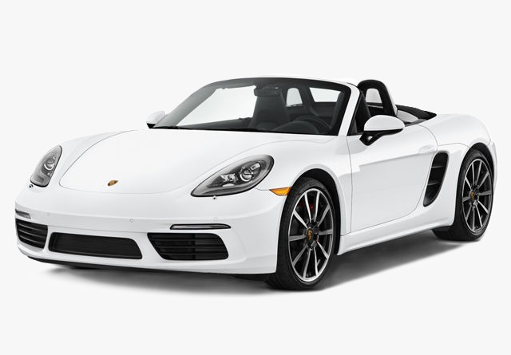
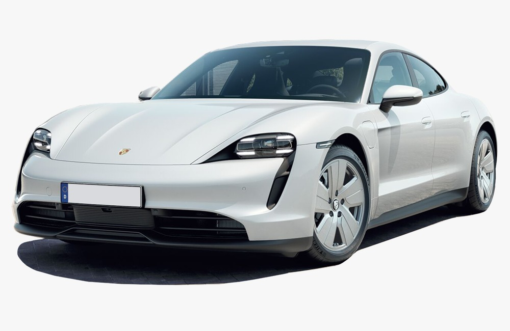
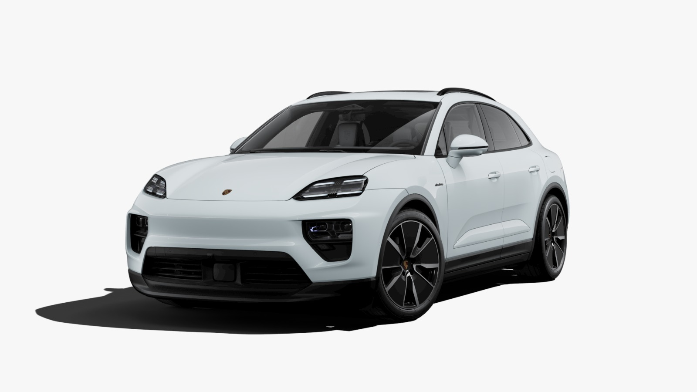
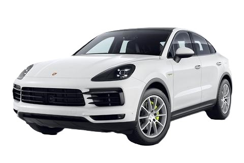

Porsche Cars Overview
Porsche 718 Cayman
Engine:
4.0 L 6-cylinder
Transmission:
6-speed manual transmission and a 7-speed PDK
Fuel Type:
petrol
Body Type:
coupe
Mileage:
9.17 kmpl
View More

Porsche 718 Boxster
Engine:
4.0-litre-6-cylinder
Transmission:
6-speed manual and a 7-speed PDK
Fuel Type:
petrol
Body Type:
convertible
Mileage:
7.5 and goes up to 14.1 kmpl
View More

Taycan Porsche
Engine:
Electric
Transmission:
two-speed transmission on the rear axle, while the front axle has a single-speed transmission
Fuel Type:
all-electric
Body Type:
estate
Mileage:
302.00 to 452.00 km per charge
View More

Macan Porsche
Engine:
2.0 litres (1,984 cc) I4 turbo
Transmission:
7-speed Porsche Doppelkupplung (PDK) dual-clutch transmission
Fuel Type:
petrol
Body Type:
SUV
Mileage:
6 kmpl to 6.1 kmpl
View More

Cayenne Porsche
Engine:
4,806 cc (4.8 L; 293.3 cu in) V8
Transmission:
8-speed Tiptronic S automatic transmission
Fuel Type:
petrol
Body Type:
Coupe body style
Mileage:
around 10.7 kmpl
View More